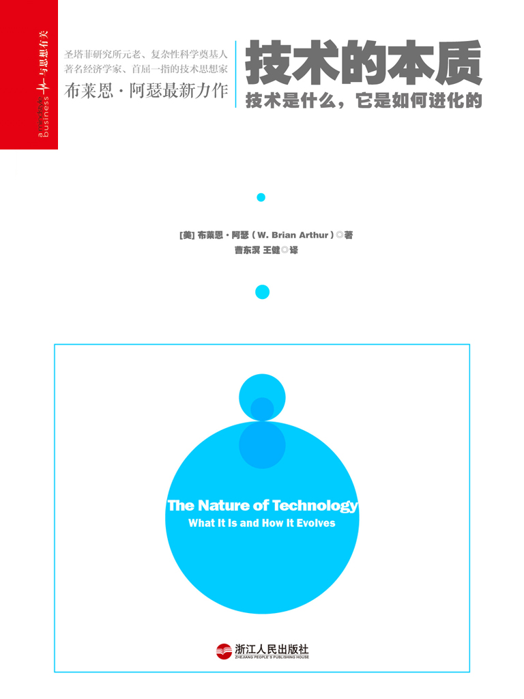

注：【】部分为笔者心得，非原文摘抄。
- 技术的循环：技术总是进行这样的循环，为解决老问题去采用新技术，新技术又引起新问题，新问题的解决又要诉诸更新的技术。
- 工程师只喜欢那些他们能解决的问题。
- “进化”的完整含义：某类事物的所有对象衍生于其以往对象的集合的过程，并且这一过程是依据类似“血统”这种纽带相关联的。
- 技术在某种程度上一定是来自此前已有技术的新的组合。
- 组合进化：之前的技术形式被作为现在原创技术的组分，当代的新技术成为建构更新的技术的可能的组分。反过来，其中的部分技术将继续变成那些尚未实现的新技术的可能的构件。慢慢地，最初很简单的技术发展出越来越多的技术形式，而很复杂的技术往往用很简单的技术作为其组分。所有技术的集合自力更生地从无到有，从简单到复杂地成长起来了。我们可以说技术从自身创生了自身。这种机制便是组合进化。
- 技术的建构不仅来自己有技术的组合，还来自于对自然现象的捕捉和征服。
- 新技术显示精神的建构，之后才是物质的建构。
- 技术的三个定义：
- 技术是实现人的目的的一种手段；
- 技术是实践和元器件的集成；
- 技术是在某种文化中得以运用的装置和工程实践的集合。
- 所有的装置实际上都在“按流程处理”着什么，这就是为什么经济学家始终认为技术就是生产手段的原因。
- 技术的最基本结构，包含一个用来执行基本功能的主集成和一套支持这一集成的次集成。
- 理解技术意味着理解它的原理，以及它是如何将这种原理转译到工作构架中去的。
- 将技术的构件模块化可以更好地预防不可预知的变动，同时还简化了设计过程。但只有当模块被反复使用且使用的次数足够多时，才值得付出代价将技术分割为功能单元。
- 技术的分解随着市场的细分而加剧。
- 技术有一个递归性结构，技术包含着技术，直到最基础的水平。
- 技术是高度可重构的。
- 组合必须是高秩序性的过程。
- 技术要达到某个目的，总是需要依赖于某个可被开发、利用的自然现象或自明之理。
- 生物对基因加以编程从而产生无数的结构，技术对现象加以编程从而产生无数的应用。
- 货币系统利用了这样一种现象：只要我们相信其他人会相信一种交换媒介是有价值的，而且这种信任会在未来持续下去，我们就会相信这个系统。
- 判别标准技术的标志就是看它是否是建立在物理现象之上的。
- 现象是所有技术的来源，技术的本质隐藏在为达成目的而去组织、协调现象的过程之中。
- 科学往往是通过关注未按常规行事而出现的某些“异常”（anomalies）来解释现象的。
- 揭示新现象的三种途径：
- 重新关注在实验过程中被忽略的细节；
- 通过理论与推理寻找现象的蛛丝马迹；
- 某种尝试的副产品。
- 科学与现象的关系：
- 科学提供观察现象的手段；
- 科学提供与现象打交道时所需的知识；
- 科学提供预测现象如何作用的理论；
- 科学提供捕获现象、为我所用的方法。
- 技术之所以应用科学，是因为这是去理解深层现象的工作机理的唯一方式。
- 某种具有共性的外在形式，或者是可以使共同工作成为可能而共同固有的能力，可以定义为一个技术集群，对于这种集群或技术体，我们称之为域。
- 个体技术对于技术体来说就如同程序对于程序语言一样。
- 在技术领域上，域的选定不取决于情绪或感受，而取决于它所能完成的集成的便利程度和效率，以及它和其它集成形成链接的容易程度以及成本。技术的域定通常是很实际的。
- 工程设计是从选择一个域开始的，也就是要选择一组适合建构一个装置的元器件，这个选择过程，我们称之为“域定”。
- 重新域定（redomained），是指以一套不同的内容来表达既定的目的。重新域定不仅提供一套新的、更有效的实现目的的方法，还提供了新的可能性。这意味着技术的颠覆性改变。
- 域不仅定义可能性，而且可以定义一个时期的风格。
- 域不仅定义时代，它们也定义时代的边界。
- 一个域就相当于一种语言，当某个域在产生一件新的艺术品时，就相当于这个域在以某种语言进行表达。语言的组织必须依据语言规则，设计的建构也要根据域允许的组合规则进行，这种规则就是语法。
- 成功的喷气飞机的引擎推力重量与加载的飞机之间的比重永远都大约介于 0.2-0.3。
- 拇指法则：即一种经验性、直觉性的简单原则。
- 好的设计是指从众多的可能性中为每个部分做出完全正确的选择。每个部分必须紧密配合，各部分的运行一定要准确，必须符合与其余部分的互动规则。
- 好的设计的美感在于适切性，在于为所获得的东西付出最少的努力。它源于一种感觉：恰如其分，增一分则多，减一分则少。
- 当任何一项活动离开一个领域并进入另一个领域的时候，其成本就会累积增加。
- 技术是一种非常易变的东西，它是动态的、活的，会随时间发展而不断进行构成和发生变化。
- 标准工程（或称设计项目）是执行一个新项目时，在已知可接受的原则下聚集方法和设备的过程，是对已有技术的新的计划、试制和集成过程。
- 一项新项目成功与否，它是否能形成可见的设计物，很大程度上依赖于围绕其周围的利益关系网：工程团队、融资系统、投资者以及其他参与者，他们从项目中获得或失去的包括权力、安全、威望的东西。
- 设计与发展是与人高度相关的组织和行动过程。
- 设计就是关于解决方案的选择。
- 一个解决方案如果被使用的次数足够多，它就成为了一个模块，并因作为适用于标准用途的模块而具有包容性，它自己也成为了一项技术。
- 解决方案并不是像生物进化那样一步一步地变化而来，它们是快速聚集起来的组合，并且以解决问题为目的。
- 新技术是针对现有目的而采用一种新的或不同的原理来实现的技术。新技术是在概念当中或实际形态当中，将特定的需求与可开发的现象链接起来的过程。
- 发明的两大模式：
- 肇始于链条的一端，源于一个给定的目的或需求，然后发现一个可以实现的原理；
- 发轫于链条的另一端，从一个现象或效应开始，然后逐步嵌入一些如何使用它的原理。
- 顿悟来自于“连续不断的思考”。——牛顿
- 发明的核心在于发现合适的可行性解决方案，即“看见”合适的工作原理。
- 发明的核心是心理联想。
- 所有发明都是目的与完成目的的原理之间的链接，并且所有发明都必须将原理转译成工作元件。
- 技术的两种发展机制：
- 内部替换（internal replacement）和结构深化（structural deepening）。内部替换是指用更好的部件（子技术）更换某一形成阻碍的部件。结构深化是指寻找更好的部件、材料，或者加入新组件。
- 为了克服各种极限，一个技术还需要主动增加次级系统或次级模块已完成如下目的：
- 加强基本性能；
- 对改变或异常进行监视并作出反应；
- 去适应更广泛的任务范围；
- 增强安全性和可靠性。
- 技术的发展深深依赖于结构的深化。
- 在新旧原理更替的过程中，旧原理往往会被锁定了，有四个原因导致旧原理通常会存在较长的时间：
- 经过精致、繁复的过程之后，已经成熟的旧原理会表现得比它的新对手好；
- 采用新原理可能意味着改变周围的结构和组织，因为成本过高，所以可能不会被实现；
- 从业者不认可这个新原理带来的愿景或承诺；
- 新原理将使旧知识过时，它在潜在的新原理与安全的旧原理之间制造了一种认知失调以及情感上的不匹配。
- 新的和已被接受的解决方式之间的距离越大，对传统方式的锁定就越牢固。
- 自适应延伸：对旧有的成功原理的锁定所引起的现象称之为自适应延伸（adaptive stretch）。
- 域实际上并不是单体技术的加和，它们是连贯的整体(coherent wholes)，是关于设备、方法、实践的族群，它们的形成和发展具有与个体技术不同的特征。
- 经济会因新的技术体而改变自身的结构。
- 域的形成有两种模式：
- 围绕核心技术联合而成；
- 从一个现象家族中建构起来。
- 域的生命周期：
- 诞生：解决母域中的特定问题，在理解和实践中固化、发展；
- 青春期：解决发展中的阻碍，产生可行的技术并应用于市场；
- 成熟期：市场由狂热走向冷静，新的域以自己的方式深入地影响经济，进入稳定成长阶段；
- 晚年：鲜有重要理念产生，有些域会被取代，但大多数还得以存在并服务于人类。
- 当一个域的关键技术发生了根本性的改变时，它就会发生变异。
- 一项新技术的到来会引起经济中的价格和生产网络在各行各业伸展、重塑。
- 如同个体技术一样，技术体也引起了经济模式的扩展性调整。
- 经济的重新域定，是指已有产业去适应新的技术体，从中提取、选择它们所需要的内容，并将其中部分零部件和新领域中的部分零部件组合起来，有时还会创造次生产业。
- 域和经济的共变和共创过程，称为“颠覆性改变”。
- 对一项技术的深层认知可以被利用到另一项技术的深层认知中。
- 技术的进化机制就是“组合进化”。所有技术都是从已经存在的技术中被创造出来的。如果新的技术会带来更多的新技术，那么一旦元素的数目超过了一定的阈值，可能的组合机会的数量就会爆炸性地增长。有些技术甚至以指数模式增长。
- 机会利基的出现召唤新技术的诞生，绝大多数机会利基的产生缘于技术本身，这是因为以下三个原因：
- 每个技术通过它的存在建立了一个能够更经济或更有效地实现其目的的机会；
- 每项技术总是需要另外的支撑技术来制造它，这些支撑技术又需要它们自己的次级支撑技术；
- 技术经常引发间接性的问题，这会产生需要提供解决方案的需求或机会。
- 机会利基市场随着技术体的变化而变化，它们随着技术体的生长而生长，并逐渐复杂起来。
- 众多的技术集合在一起，创造了一种我们称之为“经济”的东西。经济从其技术中泛现，并不断从它的技术中创造自己，决定哪种新的技术将会进入其中。经济是技术的一种表达，并随这些技术的进化而进化。
- 在实践中，一项新技术很可能会创造一个新产业；为此它可能需要建立新的制度安排；可能会引起新的技术和社会问题，并因而创造出新的机会利基；而这又可能引起进一步的组合变化。
- 技术决定经济结构以及由此产生的大部分世界，但是哪个技术获得选择却无法事先知晓。
- 一切技术都是元素的组合；这些元素本身也是技术；所有技术都利用现象达到某个目的。
- 技术集合通过采用或者丢弃某些技术，创造某些机会利基，以及揭示一些新现象来实现进化。
- 在繁衍性的经济中，竞争优势不是来自于资源储备及将这些转变为最终产品的能力，而是来自将深层知识储备转译到新的战略性组合的过程。
- 技术是对自然的编程，是对自然现象的合奏和应用，所以在最深的本质上，它应该是自然的，是极度的自然。